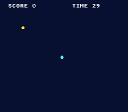

|
OpenSNES
Modern Open-Source SNES Development SDK
|
|
OpenSNES
Modern Open-Source SNES Development SDK
|
Family 5 (Game math & framework) · a capstone.
Every example so far teaches one system. This one teaches the shape that holds them together: a title screen, a play loop with a goal and a clock, and a game-over screen that loops back. It's small enough to read in one sitting and fork as the starting point for your own game.

The single idea: a game is a state machine around one frame loop. Every frame you WaitForVBlank(), read the pad, then switch (game_state) to the code for the screen you're on. A transition is just an assignment to game_state plus a one-time setup for the new screen:
It recombines rungs you've climbed: input drives the arrow sprite, a second sprite is the coin, a bounding-box test scores it, text is the HUD, and rand()/srand() scatter the coin. Motion and collision are deliberately trivial — the lesson is the structure, not the mechanics.
When the enum + switch starts to sprawl in a bigger game, the opt-in scene framework is the next step up — see scene_stack.
Probe oracles: game_state (0 title / 1 play / 2 over), score, time_left.
console, dma, background, sprite, text, input
The capstone of the basics family — it ties input, sprites, text and a state machine into a whole game. For the same structure via the scene framework, see scene_stack; for a HUD box, panel_hud.